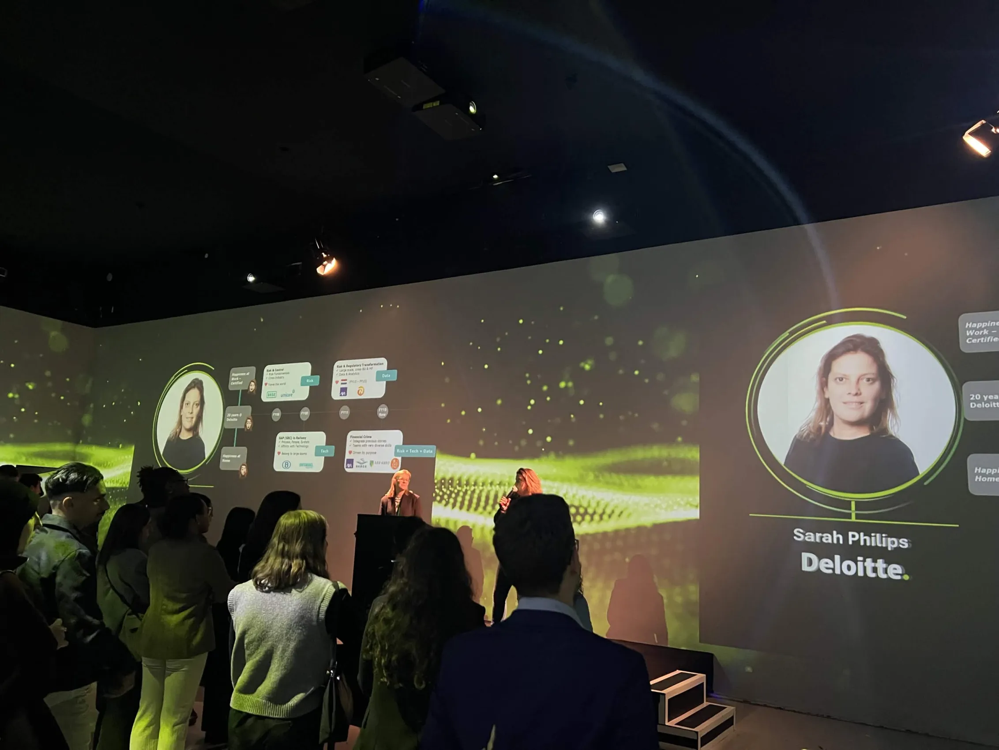
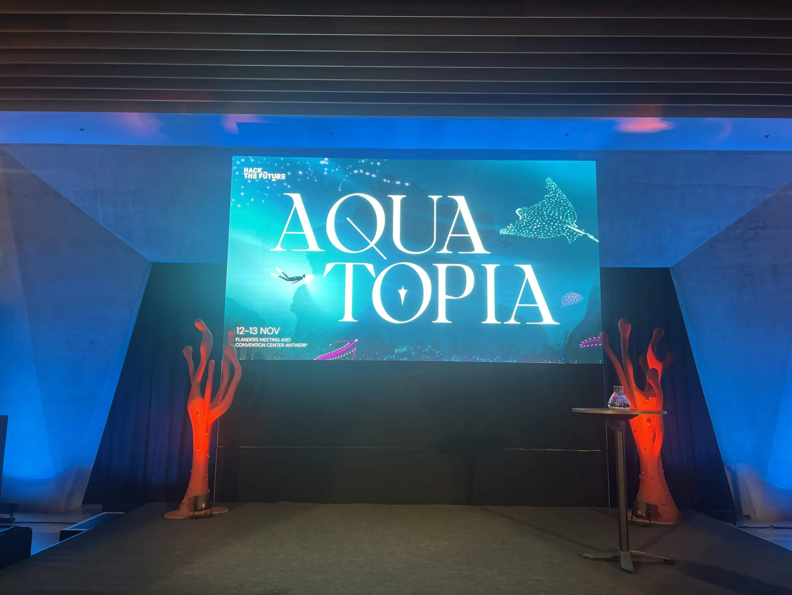
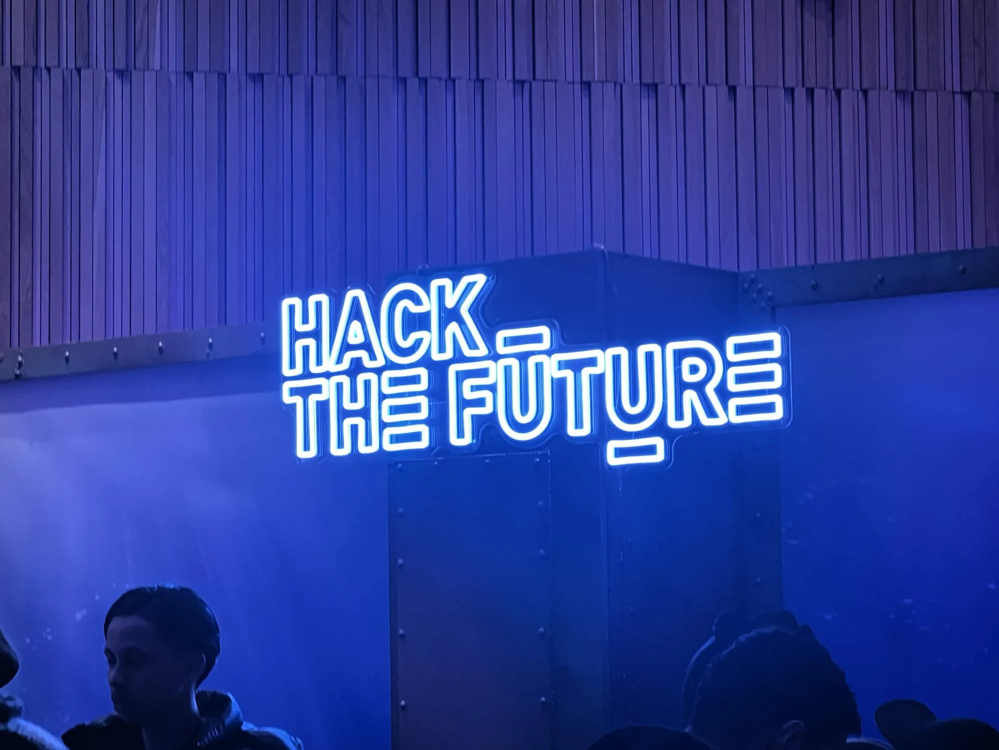

Tech Talk · Howest
Deloitte Tech Talk
Practitioner talk from Deloitte on enterprise consulting work, technology services, and how Big Four firms approach client engagements.
Community
Tech meets, conferences, and competitive events I attended alongside my coursework: meeting practitioners, sharpening skills, and being part of the security community.
Conferences & meetups

Tech Talk · Howest
Practitioner talk from Deloitte on enterprise consulting work, technology services, and how Big Four firms approach client engagements.

Tech & Meet · Howest
Practitioner talk on modern cyberdefense: monitoring, detection, and incident-response practice from the field.

Tech & Meet · Howest
Session on how LLMs are reshaping software and security workflows, with a look at risks, prompt-injection, and responsible use.

Tech & Meet · Howest
Deep-dive on IPv6 addressing, deployment patterns, and the migration challenges enterprises still face today.

Tech & Meet · Howest
Introduction to Google's Flutter framework for cross-platform mobile development.
Competition

Selected for the “Hack the Deep: Save the Ocean from E-Waste” challenge by Cronos ESG. Worked in a two-person team at the Flanders Meeting & Convention Center in Antwerp, designing a sustainability-focused solution to electronic-waste pollution in marine environments.
